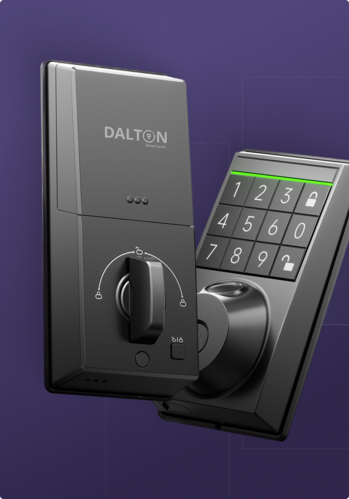
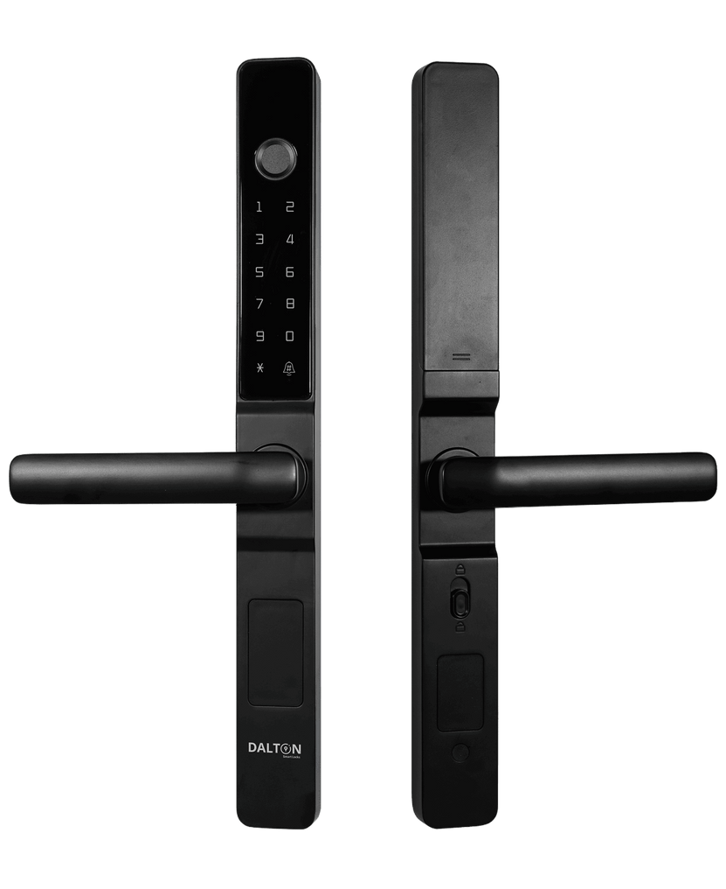

Dalton 智能锁值不值得掏钱？——替你算三笔账
从定价拆解到轻度/主力/重度三类用户算账，再到替代方案对比，把 Dalton 智能锁这笔钱的每一分去处掰清楚。
去年搬家换锁的时候我蹲了两个礼拜，翻完了北美主流智能锁的评测、参数和用户评论，最后在 Dalton 的 Solis Wi-Fi 版和 Aegis 人脸款之间犹豫了整整一周——不是选功能，是选预算。到底这笔钱花在哪一档上最划算，还是说干脆换回机械锁？
先把 Dalton 的定价逻辑摊开
Dalton官网 产品线按门型和功能分四个系列，价格跨度从入门到旗舰差了快三倍，但有意思的是，它的付费逻辑异常简单：硬件一次性买断，没有强制订阅，没有解锁费。
入门款 Solis 是 Dalton 的走量主力。蓝牙版起价 168 美元，Wi-Fi 版贵 31 美元到 199 美元——这是 Dalton 全线唯一在两百美元以内的选项。无把手纯键盘设计，五种开锁方式全带（指纹、密码、RFID、App、机械钥匙），指纹和密码各 50 个槽位。

往上走是 Lex 系列，保留传统把手，价格大致在 250~300 美元区间，适合对"像普通锁"有心理偏好的家庭。再往上是 Aegis，加了人脸识别和指静脉，直接跳到 450 美元以上，是 Dalton 的安全旗舰。Vitrex 系列比较特殊，专门给推拉门设计，价格跟 Lex 接近但目标门型完全不同——买错装不上。
这里要拎出来说清楚一个隐性成本：蓝牙款如果想远程开锁、想云端日志实时同步，必须单买 Dalton 网关，价格在 300~400 元人民币，网关连接配置流程DALTON文档里写得很细。Wi-Fi 版直接连家里路由器，省了这笔，但电池续航短一倍左右（6~12 个月 vs 12~18 个月）。
除此之外，Dalton 没有任何月度费用。App 走官方下载渠道，访客密码管理、自动上锁定时器、本地日志存储全是硬件自带。云端日志保存 90 天也是免费额度，超过的话 Dalton 目前还没推出付费扩容——至少文档里没提。
这个定价逻辑在智能锁行业里算得上良心。很多竞品会把云端存储、远程放行、多人权限管理做成订阅包，月费 5~10 美元积少成多。Dalton 不玩这一套，买硬件就是买全部功能。
算账：你属于哪类用户
下面分三种典型使用场景算一笔"每省一小时值多少钱"的账——智能锁的核心价值从来不是"开锁更快"，是替你省掉那些"不得不走一趟"的麻烦。
轻度用户：一个人住，偶尔远程放行快递
这类用户的典型画像：上班族，工作日家里没人，每周可能有一两次快递或外卖需要远程开门拿一下。
免费版够不够？ 够用。Dalton 的基础功能——指纹/密码开门、自动上锁、App 远程开锁——全是买断就给的，Wi-Fi 版直接用，蓝牙款加个网关也只是一次性投入。
付费后每单位时间成本：假设你买了 Solis Wi-Fi 版，花了约 1400 元人民币（按汇率加海淘运费），用三年的话年均成本不到 500 元。三年里你远程放行快递省下的"下班绕回家开门"的时间——一次按 15 分钟算，如果有 50 次，就是 12.5 小时。500 元换 12.5 小时，每小时 40 元。
结论：轻度用户闭眼入 Solis Wi-Fi 版。 如果你连远程放行都很少用到，蓝牙版（省 200 元）也完全可以，偶尔需要的时候走到门口用 App 开一下就行。网关暂时不用买，等真的有远程刚需再说。
主力用户：三口之家 + 钟点工/父母轮流住
这类用户：家里常住 3~5 个人，有固定的钟点工阿姨每周来两三次，偶尔父母来小住，访客密码要频繁地建、禁、删。
免费版够不够？ 还是够用，但你会频繁用到 Dalton 那几个容易被忽略的功能——访客密码即时撤销、访问日志、多槽位独立权限。这些功能 Dalton 全都给了，不额外收费，但你得花时间摸清楚怎么用。
这里要提一个很容易踩的坑：蓝牙款没配网关的话，访客密码撤销不是真的"即时"。你在 App 里点"删除"，Dalton 云端记了，但锁本身还存着——你得回家走到锁旁边、打开 App 让蓝牙同步一次，才真的从锁的内存里抹掉。如果你家是钟点工阿姨，某个密码你怀疑泄漏了，蓝牙款没网关的话你还得专门跑一趟家，这就很崩溃。
付费后每单位时间成本：主力用户建议直接 Wi-Fi 版起步，预算到 Lex 系列（约 1800~2200 元人民币）更稳妥——传统把手对老人小孩更友好。三年年均 700~750 元。这三年里你省掉的事情包括：不用给阿姨留家门钥匙、不用等家人下班才能让父母进门、密码泄漏时不用赶回家。保守估计每年省 30~40 小时，每小时 20~25 元。
结论：主力用户必须 Wi-Fi 版起步，蓝牙款要配网关。 访问日志按人按时间筛选这个功能，等你家有钟点工之后会变成日常刚需——每天看一眼阿姨的密码开门时间，比你自己问她"今天去了吗"靠谱多了。
重度用户：Airbnb 房东 / 办公室管理员 / 多套出租房
这类用户：管理不止一把锁，可能是一套 Airbnb 加两套出租房，或者一个小办公室。需要批量创建访客密码、精确追踪每次开门事件、随时撤销某个人的通行权限。
免费版够不够？ Dalton 的 App 本身不限制锁的数量，访问日志可以导出 CSV，密码撤销秒级生效——这些功能全免费。但重度用户会遇到两个 Dalton 默认没有的东西：没有管理员层级和没有 web 端批量管理界面。你得每把锁分别在 App 里操作，出租房多了之后会比较累。
另外，如果你管理的锁全是蓝牙款，那网关就是硬需求——多把蓝牙锁要同步都得靠网关转发指令。Wi-Fi 版一把一个，远端直接云端管理。
付费后每单位时间成本：假设你管理 3 把锁，两把 Wi-Fi 一把蓝牙，加上一个网关，总投入约 5500 元，三年年均不到 1900 元。Airbnb 场景下，访问日志导出 CSV 跟入住退房记录核对，能帮你省下跟客人扯皮"是不是超期滞留"的时间——这个账没法按小时算，因为超期滞留一次可能损失几百块的清洁费和信誉。办公室场景下，按人按时间的开门记录甚至可以当考勤参考，省了装专门考勤机的钱。
结论：重度用户直接全 Wi-Fi 版 + 网关兜底。 如果房东/管理员手里锁超过 5 把，Dalton 可能就不是最优选择了——你需要的是有批量管理后台的商用智能锁系统，但在两把以内的量级上，Dalton 比买一套商用系统便宜一大截。
不付这笔钱有什么别的路
Dalton 不是唯一选项。算完上面三笔账你还是觉得"要不先不换"——有几条替代方案你心里要有数：
方案一：传统机械锁 + 密码盒。在门旁边墙上装一个机械密码盒放钥匙，快递员/钟点工输密码就能拿钥匙进门。成本 50~150 块，完全没有电子故障风险。代价是：你没法远程改密码（得回家拧）、没有任何开门记录、密码泄漏了也不知道——安全性全靠盒子本身防不防撬。
方案二：国内品牌入门款智能锁。小米、鹿客、德施曼这些品牌在 800~1200 元价位段有大量可选型号，功能对标 Dalton Solis 甚至更丰富（很多自带摄像头）。但问题也明显：云端日志保存期短（很多只有 7~30 天）、访客密码管理没 Dalton 细致、App 用户体验参差不齐。如果你本身就在用米家生态，小米的联动体验会比 Dalton 好；如果只是单装一把锁，Dalton 的文档和即时撤销体验更扎实。
方案三：继续用钥匙。最省钱，但要接受这些代价：快递员来了没人开门、父母来之前要提前出门送钥匙、钟点工阿姨要配一把钥匙（然后担心她会不会多配一把）、钥匙丢了就得换锁。这些事单看没一件是大事，但每年攒起来消耗的精力比一把 Solis Wi-Fi 版的钱贵得多。

最后给你一个三分钟自测
别纠结了，对照下面三句话——同时命中两条以上，闭眼入 Dalton：
- 你家里有常住访客（钟点工、父母、合租室友）需要临时或定期进门；
- 你至少每周有一次"远程放行"的场景（快递、外卖、Airbnb 客人）；
- 你丢过钥匙，或者曾经因为"忘了锁门"跑回家一趟。
如果三条都没中，那 Dalton 对你来说就是"用着方便"的消费升级，不是"必须买"的必需品——等哪天真的有了远程需求再下手也不迟。
但有一点我得直说：Dalton 这个定价其实挺"鸡贼"的——它把最核心的差异化功能（即时撤销、按人日志、云端同步）全塞进了入门款，让你很难拒绝 Solis 这个起步档位。Aegis 的人脸款虽然贵了两倍，但 Dalton 自己的文档里也没说人脸识别比指纹安全多少，更多是"你想用这个解锁方式"的体验选择，不是刚需升级。
所以我的建议很明确：能接受无把手纯键盘的家庭，Solis Wi-Fi 版就是 Dalton 全线的甜点选择。多出来的钱买的是三年里省下的那些"不得不走一趟"的时间，每一小时都值。想深挖 Dalton 的完整功能细节，GitHub、Gitee、GitCode三处都能找到完整的中文资料备份。